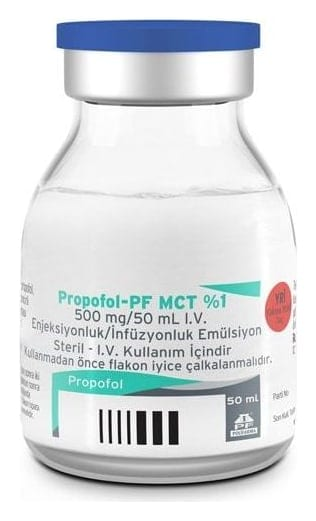

Propofol-Pf Mct %1 500 mg/50 ml I.V. Enjeksiyonluk/İnfüzyonluk Emülsiyon, 1 Adet

Ne için kullanılır
KT · Bölüm 1PROPOFOL-PF MCT %1 (500 mg/50 mL), genel ane stezikler olarak adlandırılan bir ilaç gr ubuna aittir. Gene l ane stezikler cerrahi müdahalelerin veya diğer işlemlerin yapılabilmesi için bilinçsizlik (uyku) sağlamak için kullanılır. Ayrıca sizi seda te etmek için de (uykulu, ama tam uyumuyor olmanız için) kullanılabilirl er. PROPOFOL-PF MCT %1 (500 mg/50 mL), 50 mL Tip II renksiz cam flakon içeren ambalajlarda sunulan; beyaz renkli, su içinde yağ emülsiyonudur. PROPOFOL-PF MCT %1 (500 mg/50 mL): • Yetişkinlerde ve bir aylıktan büyük çocuklarda anestezinin başlatılması ve devam ettirilmesi, • Yoğun bakım ünitesinde solunum cihazına bağlı, 16 yaşından büyük hastaların sedasyonu (sakinleştirilmesi), • Tek başına veya lokal veya rejyonel anestezi ile birlikte teşhis veya cerrahi müdahaleler sırasında yetişkinlerin veya bir aylıktan büyük çocukların sedasyonunda (sakinleştirilmesinde) kullanılır.